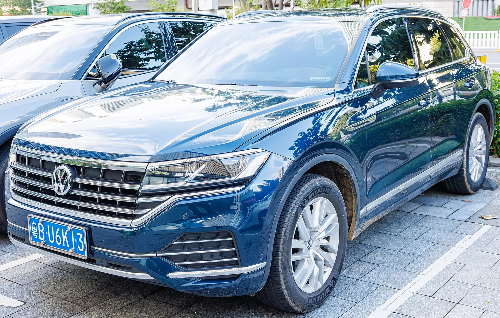

▲ 3세대 투아렉(CR). 이 세대를 끝으로 후속 없이 단종된다
투아렉은 폭스바겐이 "우리도 이런 차를 만들 수 있다"고 증명하려던 차였습니다.
포르쉐 카이엔, 아우디 Q7과 뼈대를 나눠 쓰며 2002년에 나왔습니다.
그 계보가 3세대에서 끝납니다. 후속은 없습니다.
1. 24년 전, 폭스바겐이 무리를 했다
2002년의 폭스바겐은 대형 SUV를 만들 이유가 딱히 없는 회사였습니다. 골프와 파사트를 파는 대중 브랜드였기 때문입니다.
그런데 투아렉을 냈습니다. 포르쉐 카이엔, 아우디 Q7과 플랫폼을 공유하는 프로젝트였고, 초기에는 W12와 V10 디젤 같은 과한 엔진까지 얹었습니다.
📍 투아렉이 증명하려던 것
대중 브랜드도 프리미엄 대형 SUV의 완성도를 낼 수 있다는 것이었습니다. 실제로 투아렉은 험로 주파 능력과 견인력에서 동급을 앞섰고, 폭스바겐 브랜드의 기술적 상한선을 보여주는 역할을 했습니다. 이익보다 상징에 가까운 차였다는 평가가 따라다닌 이유입니다.

▲ 투아렉은 카이엔·Q7과 뼈대를 나눠 쓰며 태어났다. 그 형제들은 전동화로 넘어갔다 ⓒ Wikimedia Commons
2. 왜 후속이 없나
시장이 옮겨갔습니다. 대형 SUV 수요 자체는 남아 있지만, 그 수요가 전동화 모델과 브랜드 프리미엄 쪽으로 이동했습니다.
같은 그룹 안에 대체재가 많다는 점도 큽니다. 아우디 Q7·Q8, 포르쉐 카이엔이 위쪽을 맡고, 폭스바겐 자체 라인업에서는 전기 SUV들이 자리를 넓히고 있습니다. 투아렉이 있던 자리가 애매해진 셈입니다.

▲ 투아렉이 있던 자리는 그룹 내 다른 모델과 전동화 라인업이 나눠 가졌다 ⓒ Wikimedia Commons
3. 국내 가격
| 트림 | 가격 |
|---|---|
| 프레스티지 | 1억 642만 1,000원 |
| R-Line | 1억 1,650만 6,000원 |
두 트림의 차이는 약 1,008만 원입니다. R-Line은 전용 외장과 디자인 요소가 더해진 사양입니다.
국내 인도는 2026년 4월 8일부터 시작됐습니다. 파이널 에디션이라는 이름 그대로, 이후 물량은 계획돼 있지 않습니다.
4. '파이널'이라는 이름값
마지막 판이라는 표시를 곳곳에 새겼습니다.
| 항목 | 내용 |
|---|---|
| 레이저 각인 | 창문 프레임, 기어 레버, 도어 스커프 등 |
| 보증 연장 | 5년 / 15만km 무상 보증 |
| 자기부담금 지원 | 사고 수리 시 부담을 덜어주는 프로그램 |
각인은 상징이고, 실질은 보증입니다. 단종 모델을 사는 사람이 가장 걱정하는 것이 이후의 정비와 부품이기 때문입니다. 5년/15만km 보증 연장은 그 불안을 정면으로 겨냥한 조건입니다.

▲ 투아렉이 있던 자리는 그룹 안팎의 다른 모델이 나눠 맡는다 ⓒ Wikimedia Commons
5. 단종 모델을 사도 되나
단종은 그 자체로 감점이 아니라, 따져야 할 항목이 늘어나는 일입니다.
| 유리한 점 | 따져야 할 점 |
|---|---|
| 보증 연장 등 조건이 붙는다 | 중고 잔가가 상대적으로 불리할 수 있다 |
| 후속 눈치를 볼 필요가 없다 | 부품 수급은 법정 기간은 지켜지나 이후가 변수 |
| 완성도가 정점에 오른 마지막 연식 | 편의·안전 사양이 최신 세대에 뒤질 수 있다 |
| 희소성 | 서비스 네트워크 축소 여부 |
마지막 연식은 대체로 완성도가 가장 높습니다. 초기 결함이 정리되고 사양이 다듬어진 상태이기 때문입니다. 반대로 잔가는 후속이 있는 모델보다 불리하게 잡히는 경우가 많습니다.
보증 조건과 잔가 손실을 함께 계산해 보는 것이 순서입니다.
6. 정리
투아렉이 3세대를 끝으로 단종됩니다. 2002년 등장 이후 24년, 후속 계획은 없습니다.
국내 가격은 프레스티지 1억 642만 1,000원, R-Line 1억 1,650만 6,000원입니다. 2026년 4월 8일부터 인도가 시작됐습니다.
파이널 에디션에는 전용 각인과 함께 5년/15만km 보증 연장이 붙습니다. 단종 모델의 가장 큰 불안 요소를 겨냥한 조건입니다.